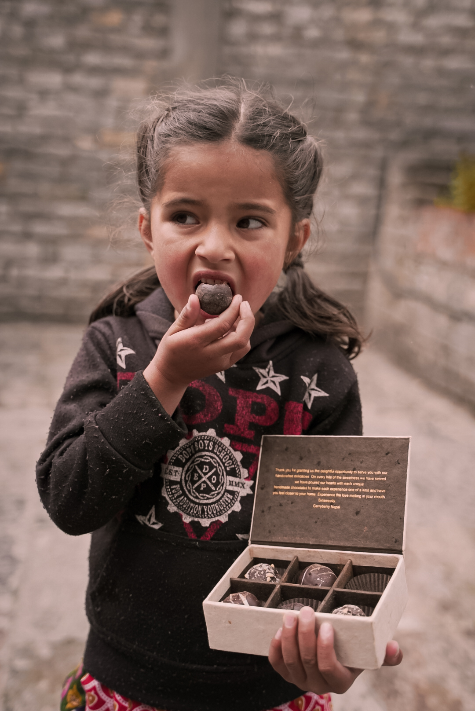
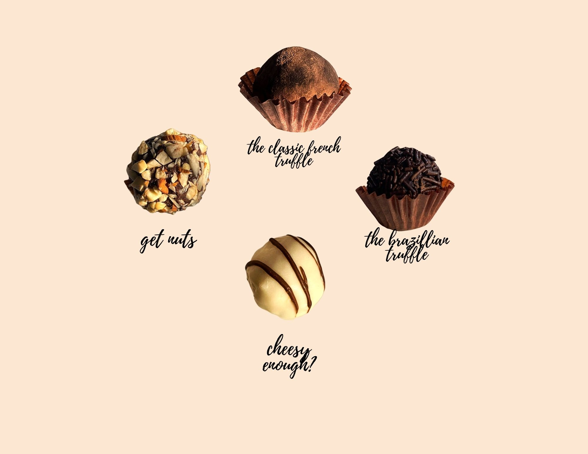

.jpg)
Gerryberry Nepal: How I Built a Chocolate Company at 19
The Idea
It was January 2019 when the concept of handmade/homemade chocolates was turned to actions. The chocolate idea started with the thought of giving Nepalese the taste of ginger in the chocolates.Yes! ginger! The homely remedy for almost every flu and something so rich in antioxidants. Along with ginger strawberry added chocolates were brought. In these chocolates,we didn’t add the flavors,we added the real dried strawberries and ginger which was brought ,cleaned and dried In our own home. Thus the gerryberry was created, Gerry from ginger and berry from strawberry. the idea of ginger and strawberry in the chocolates were so loved by all our customers,they did wanna try it feri feri which is our tag line .
Starting Out
Gerryberry started soon after the time when socialmedia was crying seeing the turtle struggling for its life because of the plastic straw which was stuck inside it. Walking in the streets of Kathmandu full of undecomposed plastic wrappers bothered us as an individual alot . so our intention was to provide plastic free chocolate packets.we wanted to provide our customers as well as us a guiltfree chocolate experience.so we started off by packaging the chocolates in the recycled paper,with nepali paper’s tag.

Growing Through Covid
However, in 2021 we thought of giving the chocolates a luxury twist,we brought different truffle boxes along with the assorted box of truffles where we added 4 different truffles. The truffles are made from fresh cream,condensed milk and cream cheese made by our own hands,after experimenting for months before starting the handmade truffle ranges,finally we got our hands on four beautiful varieties. The taste of the truffles have been inspired from the original chocolate truffles,not at all changed,just the way how the truffles should be.

Going International
Soon after that, the word of mouth became international and we started exporting chocolates interntionally!! I delivered 500 pieces of truffles to Mumbai which was one of our biggest win. Finally we grew to make hundreds of customers satisfied and happy about the truffles and to brought different and beautiful chocolate experiences to our town and beyond. All this amidst my ongoing bahelors in an entirely different subject. Despite my success, i knew it was time i took a break from it to focus on my graduation and academic.
What I Learned
Gerryberry was an integral part of my learning and my personality. I learnt alot about business analytics, business development and customer satisfaction which is relevant in every kind of businesses. I am proud of what gerryberry achieved and how i learned about every challengs behind a bussiness operation including the ideation, to operation, marketing and legal aspects. I still indend to continue what i built probably after I turn 40, because right now, i am focused on my career as a cartographer.